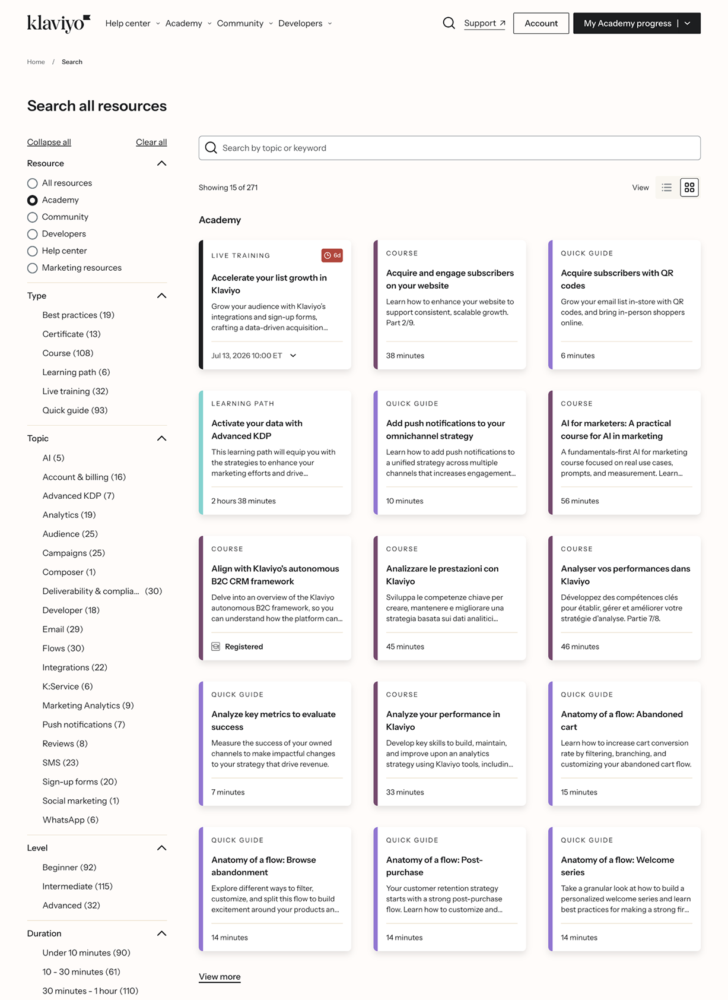
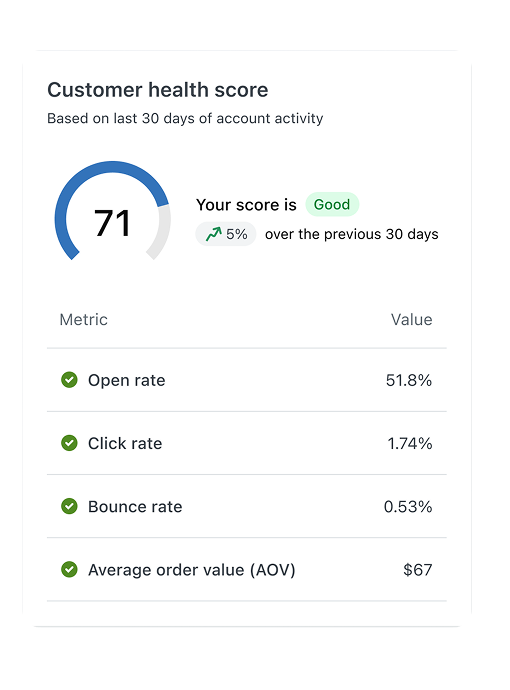
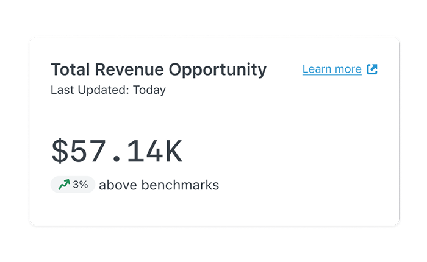
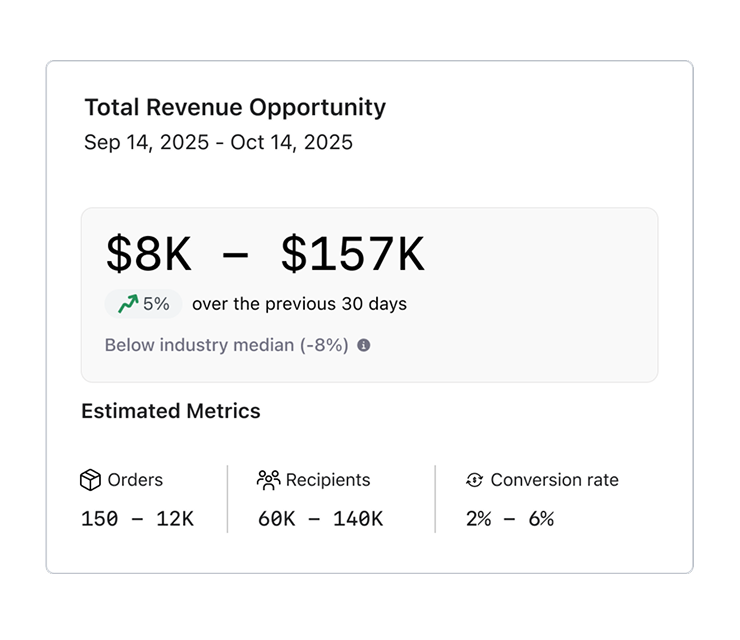
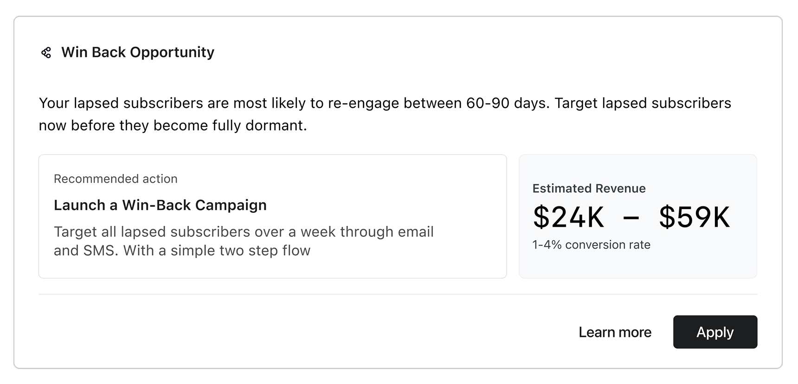
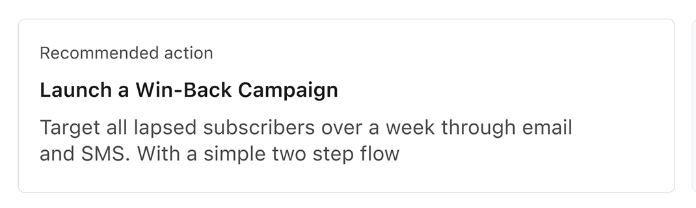
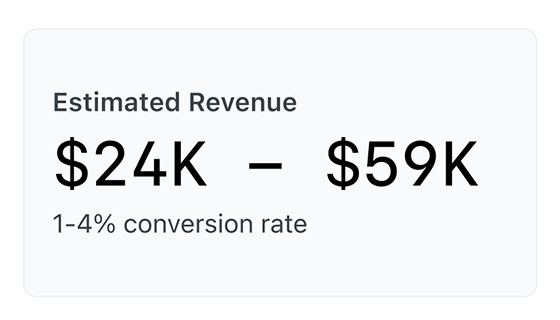

AI Insights
Turning Klaviyo's customer data into AI-powered revenue recommendations — helping marketers move from analysis to action.

I reframed AI recommendations around revenue opportunity, helping marketers move from analysis to action faster — and established the design framework Klaviyo now uses for agentic intelligence.
How might we help marketers discover and act on revenue opportunities — without requiring them to be data scientists?
Lots of data. Little action.
Klaviyo sits on a treasure trove of 1st-party customer data, but turning it into action was manual, slow, and gated by marketing maturity. At every scale, the same truth held: raw data does not equal revenue.
SMB
I have data but don't know what it means.
Enterprise
I have answers but they are buried in noise.
Generic suggestions sent users to help docs — not to action
The previous experience generated one-size-fits-all tips from high-level account metrics, then linked out to documentation. It failed for four reasons:
Generic
Built on account-level metrics with no specific customer context.
Disconnected
Advice lived apart from the data it was based on.
Low trust
No reasoning shown, so users had no way to verify claims.
No direct action
Suggestions ended in help docs, breaking focus and momentum.

I went out and interviewed 18 marketers across 9 different industries
Beauty brands, apparel shops, food & beverage companies, and so many more — getting a range of perspectives was important because it led us to three main issues with turning data into action:
Data Silos
"Having to jump between platforms to piece together a picture of performance is exhausting."
High Cognitive Load
"I spend hours reading help docs just to understand what the numbers mean before I can act."
Lack of Confidence
"I have all this data but I don't know what it's telling me or what to do about it."

Affinity mapping from 18 interviews across 9 industries
I pitched 3 strategies to move from a passive data repository to an active growth engine.
01 Tell a story
Users are drowning in dense data rows without clear takeaways. We pivoted to summarizing high-level patterns and metrics — replacing raw numbers with narrative context.
02 Show the 'why'
Raw data without context creates anxiety rather than clarity. Every system suggestion is backed with proven evidence, benchmarks, and transparent reasoning.
03 Make action easy
Insight without a clear path forward is wasted. Every recommendation needed a one-click path to execution — from opportunity straight to campaign.
From health score to revenue opportunity
My first concept summarized account performance as a gamified 0–100 "health score," modeled on a credit report — recommendations were framed as opportunities to gain points. Testing with marketers killed it: the score reduced visual clutter but increased anxiety.
The Translation Gap
Users couldn't translate a "+12 point increase" into a business outcome. The score abstracted away the very numbers marketers use to justify decisions to leadership.
The Validation Barrier
Users couldn't verify where a recommendation came from, so they hesitated to act. Without transparency, trust eroded rather than grew.
The early concept — composite health score (0–100) modeled on a credit report
Marketers don't optimize for scores. They optimize for revenue.
Three decisions made the product trustworthy
Building trust is rooted in transparency and comprehension. Following feedback from users, I redesigned key components of the experience — focusing on making user data and recommended strategies not just accessible but comprehensible, in a manner that users can verify for themselves.
Revenue ranges, not precise numbers
A single projected number implies certainty the model doesn't have. A range communicates that this is a prediction, demonstrates statistical rigor, and avoids the trust collapse that comes with a wrong "exact" forecast — all backed by industry benchmarks users could verify.



Explainability in every recommendation
Every recommendation card answers the four questions that determine whether a marketer trusts AI: Why am I seeing this? What is it worth? How was it calculated? What do I do next? Say it once, show it always — analysis packaged as a single atomic unit.



Human-in-the-loop campaign launch
The AI acts as the production engine — selecting strategy and generating emails, SMS, and imagery — but the marketer retains final authority, validating every asset before it goes live. Speed never compromises brand safety.
Designing with data science: Each decision came from close collaboration with the data science team — translating model outputs like confidence intervals and benchmark cohorts into user-facing concepts: revenue ranges, "why am I seeing this" evidence, and estimated metrics marketers could take to leadership.
Three moments that matter
01 — Discover the opportunity
Browse ranked opportunities and validate the logic and data behind each recommendation — no manual analysis required.
02 — Launch the campaign
Move from insight to live campaign in one flow, with AI-generated content the marketer reviews and approves.
03 — Track what the AI delivered
A closing feature: recommendations report their own results over time, compounding trust in the system.
Results that shaped the roadmap
Reflection: This project shifted Klaviyo from passive analytics to proactive revenue intelligence. It also taught me what designing AI systems really is: designing trust — show the reasoning, admit uncertainty with ranges, and keep the human in control of the final call.